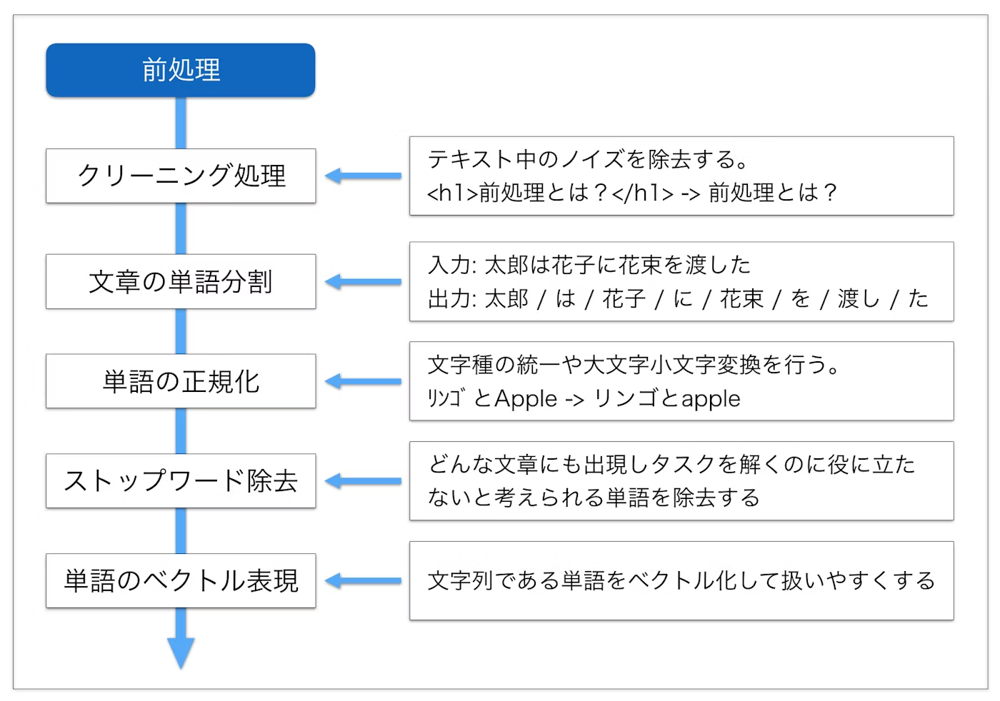

自然言語処理の基礎#
テキストの前処理#
テキストは文字の羅列であり構造化されていないため、そのままでは処理するのが難しいです。そこで、前処理を通じてテキストを整理し、分析やモデルに適した形式に変換する必要があります。

正規表現によるノイズの除去#
テキスト分析における、テキストから不要な情報やノイズを取り除き、解析や処理を行いやすくするための前処理が不可欠になります。
テキストクリーニングを行う際に、正規表現を利用すると非常に柔軟にノイズの除去が可能です。以下、いくつかの一般的なケースを例に、テキストからノイズを除去する方法を紹介します。
re.subは、正規表現にマッチした文字列を別の文字列に置換するための関数です。対象となる文字列の中で正規表現パターンにマッチする部分を、置換後の文字列に置換します。
第1引数には正規表現パターン、第2引数には置換後の文字列、第3引数には対象となる文字列を指定します。
import re
#ウェブページやSNSのテキストからURLを取り除く場合:
text = "この店は美味しいですhttp://example.com "
cleaned_text = re.sub(r'http\S+', '', text)
print(cleaned_text)
この店は美味しいです
# HTMLタグの除去: HTMLコンテンツからタグを取り除く場合:
text = "今日は2023年9月16日です。"
cleaned_text = re.sub(r'\d', '', text)
print(cleaned_text)
今日は年月日です。
#テキストからアルファベットのみを取り除く場合:
text = "これはテストtextです。"
cleaned_text = re.sub(r'[a-zA-Z]', '', text)
print(cleaned_text)
これはテストです。
トークン化#
トークン化は、文字列をモデルで使用される最小単位に分解するステップです。トークンは通常、言語の基本的な構成要素である単語や部分文字列を指します。
日本語は英語などとは異なり、単語の間に（スペースなどの）区切りをつけないので、文から単語を取り出すこと自体が一つのタスクとなります。文から単語（正確には形態素と呼ばれる意味の最小単位）を取り出す解析を形態素解析といいます。
イメージとしては以下のように分割します。
分かち書き（文章を形態素で分ける）
品詞わけ（名詞や動詞などに分類する）
原型付与（単語の基本形をだす） 例：食べた ⇒ 食べる、た

日本語の形態素解析ツールとしては、MeCabやJUMAN++、Janomeなどが挙げられます。ここでは、MeCabを使って形態素解析をしてみましょう。
初めてMeCabを使う場合、!が付いたコードをJupyter Notebookで実行するか、!を除去したコードをターミナルで実行し、MeCabを導入してください。
!pip install mecab-python3 # mecab-python3のインストール
!pip install unidic
!python -m unidic download # 辞書のダウンロード
結果を確認すると、単語に分割しただけでなく、品詞などの情報も得られました。
ただ、デフォルトの設定では新語に対する解析は強くないことがわかります。
# !pip install mecab-python3 # mecab-python3のインストール
# !pip install unidic
# !python -m unidic download # 辞書のダウンロード
import MeCab
import unidic
tagger = MeCab.Tagger()
print(tagger.parse("友たちと国立新美術館に行った。"))
友 名詞,普通名詞,一般,,,,トモ,友,友,トモ,友,トモ,和,"","","","","","",体,トモ,トモ,トモ,トモ,"1","C3","",7324130487706112,26645
たち 接尾辞,名詞的,一般,,,,タチ,達,たち,タチ,たち,タチ,和,"タ濁","基本形","","","","",接尾体,タチ,タチ,タチ,タチ,"","C3","",6149852035686912,22373
と 助詞,格助詞,,,,,ト,と,と,ト,と,ト,和,"","","","","","",格助,ト,ト,ト,ト,"","名詞%F1,動詞%F1,形容詞%F2@-1","",7099014038299136,25826
国立 名詞,普通名詞,一般,,,,コクリツ,国立,国立,コクリツ,国立,コクリツ,漢,"","","","","","",体,コクリツ,コクリツ,コクリツ,コクリツ,"0","C2","",3460171716239872,12588
新 接頭辞,,,,,,シン,新,新,シン,新,シン,漢,"","","","","","",接頭,シン,シン,シン,シン,"","P2","",4736429838180864,17231
美術 名詞,普通名詞,一般,,,,ビジュツ,美術,美術,ビジュツ,美術,ビジュツ,漢,"","","","","","",体,ビジュツ,ビジュツ,ビジュツ,ビジュツ,"1","C1","",8801049481716224,32018
館 接尾辞,名詞的,一般,,,,カン,館,館,カン,館,カン,漢,"","","","","","",接尾体,カン,カン,カン,カン,"","C3","",2056095367569920,7480
に 助詞,格助詞,,,,,ニ,に,に,ニ,に,ニ,和,"","","","","","",格助,ニ,ニ,ニ,ニ,"","名詞%F1","",7745518285496832,28178
行っ 動詞,非自立可能,,,五段-カ行,連用形-促音便,イク,行く,行っ,イッ,行く,イク,和,"","","","","","",用,イッ,イク,イッ,イク,"0","C2","",470874511778436,1713
た 助動詞,,,,助動詞-タ,終止形-一般,タ,た,た,タ,た,タ,和,"","","","","","",助動,タ,タ,タ,タ,"","動詞%F2@1,形容詞%F4@-2","",5948916285711019,21642
。 補助記号,句点,,,,,,。,。,,。,,記号,"","","","","","",補助,,,,,"","","",6880571302400,25
EOS
この問題は形態素解析器に辞書を追加することである程度解決することが出来ます。特に、NEologdという辞書には、通常の辞書と比べて多くの新語が含まれています。
NEologdのインストールについては、以下のベージに参照してください。
辞書を指定して、タガーを生成します。
sample_txt = "友たちと国立新美術館に行った。"
path = "-d /opt/homebrew/lib/mecab/dic/mecab-ipadic-neologd"
m = MeCab.Tagger(path)
print("Mecab ipadic NEologd:\n",m.parse(sample_txt))
Mecab ipadic NEologd:
友 名詞,一般,*,*,*,*,友,トモ,トモ
たち 名詞,接尾,一般,*,*,*,たち,タチ,タチ
と 助詞,並立助詞,*,*,*,*,と,ト,ト
国立新美術館 名詞,固有名詞,一般,*,*,*,国立新美術館,コクリツシンビジュツカン,コクリツシンビジュツカン
に 助詞,格助詞,一般,*,*,*,に,ニ,ニ
行っ 動詞,自立,*,*,五段・カ行促音便,連用タ接続,行く,イッ,イッ
た 助動詞,*,*,*,特殊・タ,基本形,た,タ,タ
。 記号,句点,*,*,*,*,。,。,。
EOS
上の例から分かるように、NEologdは「国立新美術館」のような固有表現にも対応し、ソーシャルメディアのテキストなど新語が多数含まれている場合こちらの方が適切です。
parseToNode()メソッドは、形態素（ノード）ごとに出力をしていきます。
n=m.parseToNode(sample_txt)
最初は、BOS/EOS(文頭／文末)を示す符号となります。
n.feature
'BOS/EOS,*,*,*,*,*,*,*,*'
.nextで次のノードに進みます。
n = n.next
n.feature
'名詞,一般,*,*,*,*,友,トモ,トモ'
ところでfeatureは形態素の特徴を表す要素を格納しています。
\(0\)番目が品詞、\(6\)番目が基本形であり、今回はこの2つを用います。
print("品詞: "+n.feature.split(',')[0])
print("基本形: "+n.feature.split(',')[6])
品詞: 名詞
基本形: 友
文章を解析するためには、whileループを使います。その際、品詞を指定して特定の品詞の基本形だけを取り出すなどという操作が可能です。
n=m.parseToNode(sample_txt)
while n:
if n.feature.split(',')[0] in ["名詞","形容詞","動詞"]:
print(n.feature.split(',')[6])
n = n.next
友
たち
国立新美術館
行く
ストップワードの除去#
ストップワードとは、助詞など単独で用いられなかったり、一般的に使用されすぎていて文の意味の分析に寄与しない、あるいや逆に使用頻度が少ないため、含めると分析結果が歪んでしまうなどの理由で分析からあらかじめ除外しておく語のことをいいます。
一般的には、あらかじめストップワードを辞書に定義しておき、辞書内に含まれる単語をテキスとから除外します。
一般的な用語のストップリストは例えばSlothLibプロジェクトから取得することができます。
#import urllib
#slothlib_path = 'http://svn.sourceforge.jp/svnroot/slothlib/CSharp/Version1/SlothLib/NLP/Filter/StopWord/word/Japanese.txt'
#slothlib_file = urllib.request.urlopen(slothlib_path)
#slothlib_stopwords = [line.decode("utf-8").strip() for line in slothlib_file]
#slothlib_stopwords = [ss for ss in slothlib_stopwords if not ss==u'']
テキストの特徴量表現#
機械学習では、実数値を要素とするベクトルで入力を表現することが多いです。適切な特徴(feature)を生データから作成すること、機械学習モデル性能も向上につながります。
テキストデータもベクトク化する必要があります。
n-gramベクトル#
n-gramは、テキストデータやシーケンスデータの連続するN個のアイテム（文字、単語など）を指す言葉です。特に\(n=1\)の場合をuni-gram, \(n=2\)の場合をbi-gramと呼びます。
例えば、I love machine learningという文をn-gramで表現してみます。\(n=1\)の場合は["I", "love", "machine", "learning"]、\(n=2\)の場合は["I love", "love machine", "machine learning"]、\(n=3\)の場合は["I love machine", "love machine learning"]のようにテキストを表現できます。
抽出されたN-gramを一意なものとしてリストアップし、各n-gramに対して重複のないように数値を割り当てます。これを語彙(vocabulary)と呼びます。
次に、 テキストごとに、語彙に含まれるN-gramの出現頻度や存在をベクトルとして表現します。
Note
n-gramでは、ある程度にローカルな情報、文の構造や単語の順序を考慮することができます。一方、語彙のサイズが大きくなると、スパースなベクトルが生成され、計算コストが高くになるなどの欠点もあります。そのため、N-gramベクトルはある意味で「古典的な」特徴量表現になります。現在のNLPの分野では、埋め込みベクトルや事前学習済みモデルを使用する手法が主流になっています。
one-hotエンコーディング#
one-hotエンコーディングでは、ある単語がテキストに存在するかどうかでベクトルを作成します。具体的には、
語彙（ユニークな単語のリスト）を作成する。
この語彙のサイズをベクトルの長さとし、各単語が語彙のどの位置に存在するかに応じて1の値を持つベクトルを生成する。
例えば、以下の語彙に基づいて、“like a banana”のone-hotエンコーディング結果は[0, 0, 0, 1, 1, 0, 0, 1]

tf-idf#
tf-idfとは、「ある文書内」で「ある単語」が「どれくらい多い頻度で出現するか」を表すtf（term frequency：単語頻度）値と、「全文書中」で「ある単語を含む文書」が「（逆に）どれくらい少ない頻度で存在するか」を表すidf（inverse document frequency：逆文書頻度）値を掛け合わせた値のことです。
Term Frequency (TF): 特定の文書内の単語の出現頻度を表します。
Inverse Document Frequency (IDF): コーパス全体において、特定の単語がどれほど珍しいかを評価する指標です。
要するには、tf-idfの基本的な考え方は、ある単語が多くの文書に出現するなら、その単語は一般的に重要でないと考えられます。例えば、ある文書で「の」の出現頻度は高いが、同時に多くの文書に出現すると重要性が小さくなります。
Note
ここまでテキストベクトル化の手法を説明しましたが、実に、これらの手法では単語の意味や関係をうまく捉えない、大規模のテキストデータに対応できない、汎用性は低いなどの欠点が挙げられます。これらの制約を克服するため、現在のNLPの分野では、埋め込みベクトルや事前学習済みモデルを使用する手法が主流になっています。
埋め込みベクトル#
単語埋め込みベクトル（Word Embedding Vector）とは、単語を数値ベクトルの形で表現したものです。
この表現は、単語の意味や文脈情報を数値で表現することにより、機械学習モデルがテキストデータを効果的に処理できるようにするために使用されます。
類似性: ある概念を表現する際に、ほかの概念との共通点や類似性と紐づけながら、ベクトル空間上に表現します。
単語類推: 分散表現では異なる概念を表現するベクトル同士での計算が可能です